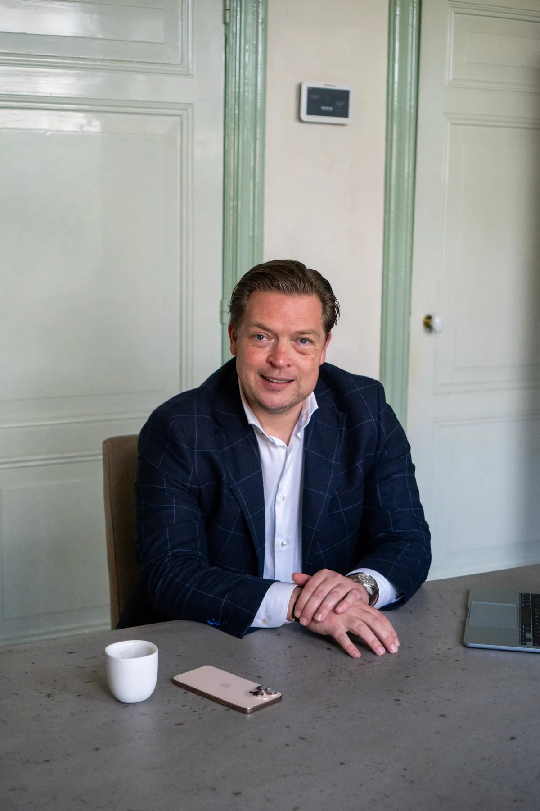

Training
Sales is topsport: dat weet iedereen in dit vak. Onze trainingen zijn op maat gemaakt voor uw organisatie en doelgroep, van de startende verkoper tot de ervaren commerciële man of vrouw. We werken informeel en interactief, met rollenspellen waarin de hele groep meedoet. Groei komt door oefenen, oefenen en nog eens oefenen: samen, niet alleen.
Meer over trainingAdvies
Een probleem zien is nog geen oplossing: wie er middenin zit, wordt er vaak blind voor. Externe kunde zorgt voor interne progressie: wij brengen ervaring uit andere organisaties mee naar uw vraagstuk, zonder meteen pasklare antwoorden te leveren. Doel is het potentieel van uw mensen te benutten, niet het over te nemen.
Meer over adviesInterim management
Soms is er tijdelijk extra expertise nodig: bij het doorlichten van een verkooporganisatie, een reorganisatie, of de implementatie van een nieuwe salesstrategie. We stoppen niet bij het plan: we blijven betrokken bij de uitvoering en de monitoring, want daar wordt het verschil pas echt gemaakt.
Meer over interim management